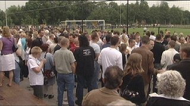
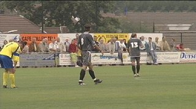
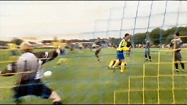

|
FC
Kerkrade-West - Roda JC (1-15) |
FC
Kerkrade-West - Roda JC (1-15)
2 juli 2005

Ook in de tweede oefenwedstrijd veel publiek.

Roda speelde in de grijze uit-tenues.

Hier scoort Bodor. Ondanks de grote overwinning was
de trainer niet helemaal tevreden.
Met de Intertoto-wedstrijd tegen Liberec in zicht vertelt
Stevens dat ook deze kans aangegrepen moet worden.
De tegenstander is al bestudeerd.